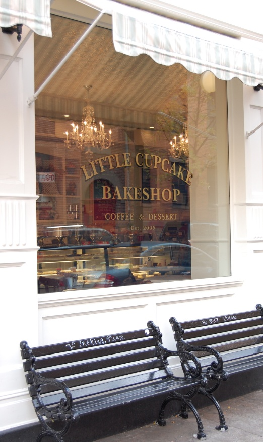
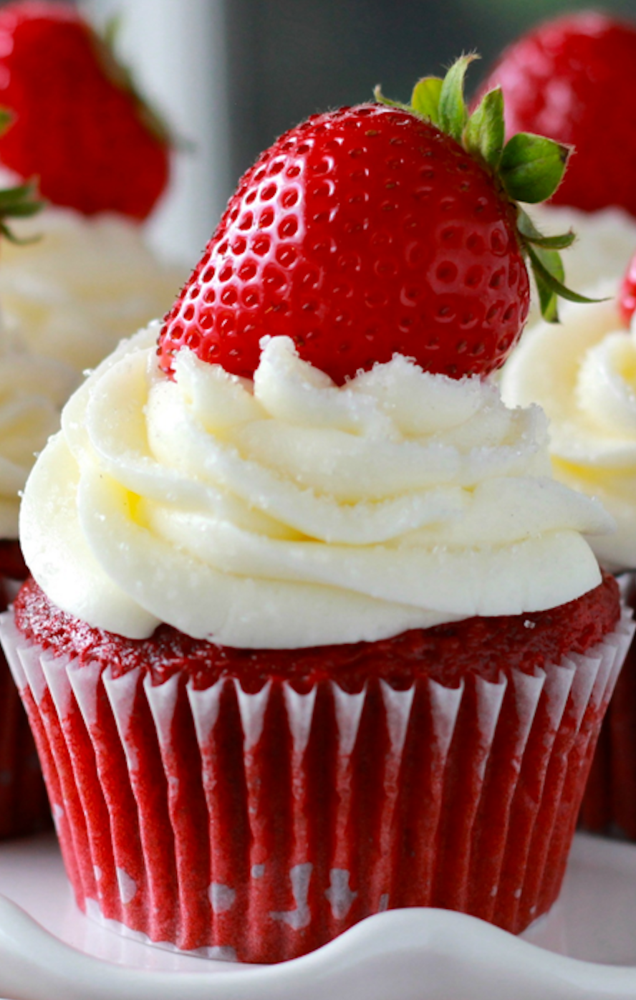
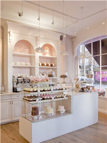

Welcome!
Little Cupcake Bakeshop was established in Brooklyn, NY on July 23rd, 2005. We specialize in baking wholesome traditional American desserts, using only the freshest, sustainable ingredients, predominantly sourcing locally, from farms in the Hudson Valley, Catskills, Vermont, New Jersey, and in strides, seasonally, with all baking done in small batches on-site, everyday. No shortening. No preservatives. Our milk is from grass fed cows. Our espresso bars serve organic teas and Non-GMO illy caffe. Each LCB store is a green architectural design and we're active in supporting local community groups, and sustainable development initiatives at the local, national and international level.
Most Popular Items
Favorites include the "Brooklyn Blackout Cake", hailed by one writer the "Best Chocolate Cake in America"; LCB's homage to our beloved Old Little Italy the "Mott Street" cupcake is our take on tiramisu, a vanilla bean cupcake drenched in espresso topped by homeade mascarpone icing; and the "Blue Velvet" cake, a moist buttermilk cake with blueberries from farms in New Jersey, homeade creamcheese icing, and a dash of organic food coloring that is made from flowers.
Green Design
Our goal is to create a new business model that works for people and planet. Each Little Cupcake Bakeshop institutes energy efficient practices, appliances, equipment and tools, including an 18 Seer HVAC unit, Energy Star equipment, Low Emissions windows, LED and CFL lighting, motion sensors and thermal control monitors. Salvaged materials and fixtures, recycled sheet rock, FSC certified wood, eco grout, sealants, zero VOC paints are also part of our construction. Our cleaning solutions are toxic free and packaging is made from corn or recylced mulch and is 100% biodegradable. We predominantly source our everyday ingredients from local farms in New Jersey, Hudson Valley, Catskills, Pennsylvania and Vermont
  For more information, check out our main website!